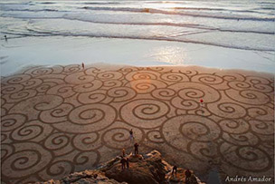
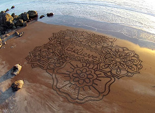

Creating Art!
San Francisco artist Andres Amador uses the beach as his canvas, racing against the tide to create these large scale temporary masterpieces using a rake or stick.A piece inspired by Mexican prehistoric art. It's done at Patzcuarito, a gorgeous beach south of Sayulita, Mexico. It's long and quite narrow, not so ideal for a design that needs a bit of spaciousness to be fully expressed.
Creating from imagination!
A piece inspired by Mexican prehistoric art. It's done at Patzcuarito, a gorgeous beach south of Sayulita, Mexico. It's long and quite narrow, not so ideal for a design that needs a bit of spaciousness to be fully expressed. Also, we're still getting a handle on the tide timing and we have been getting broadsided by the returning tide.
Inspiration: Shine your light!
Always shine your light and then you can make anything possible. If you put your mind towards something you want in life, you can almost always get it in the end. Watch my youtube channel and keep posted with artwork I do around the world.
On Coast to Coast AM: Playa Painting 'Coriente'
In honour of being in Mexico and of being on a long, thin beach, here is a representation of Xiuhcóatl, the Aztec fire serpent, the light that drives out the darkness. While we were finishing, an elder who felt ancient yet vibrant came walking along the beach with his staff. It felt so beautiful and appropriate.
A fun piece done in about an hour while passing through Santa Cruz on our journey to Mexico.
Mexico: Believe Design
Popular Posts: Order Online Postcards
- Full Moon honoring with Andres and Ember
- Playa Painting " Bubbles II"
- Playa Painting - kelp IV
- Playa Painting 'Corriente'